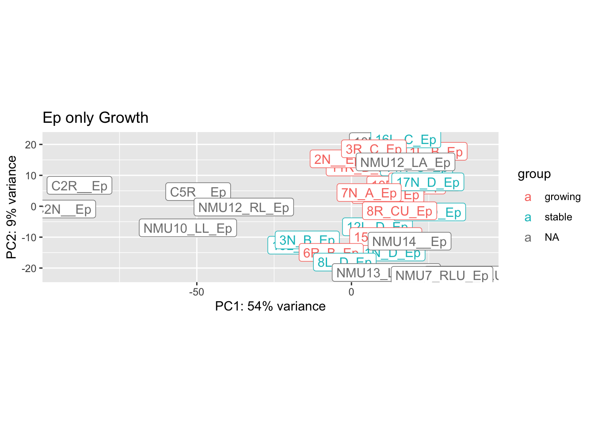

Chapter 6 Expression data
This file looks at loading and pre-processing data for:
- differential gene expression analysis
- uploading into CIBERSORT/TIMER
6.1 Running alignment
Samples were mapped in star using the following parameters. Note that the first two batches of samples run had shorter read lengths (~75 bp) whereas batch 3 had lengths of ~150bp
## Not run here
STAR \
--readFilesCommand zcat \
--genomeDir /n/scratch2/at268/rn6_v2 \
--sjdbGTFfile /n/scratch2/at268/rn6_v2/rn6.refGene.gtf \
--runThreadN 10 \
--runMode alignReads \
--genomeLoad NoSharedMemory\
--outSAMattributes NH HI AS nM NM\
--outSAMstrandField intronMotif\
--outFilterMultimapNmax 20\
--alignSJoverhangMin 8\
--readFilesIn $1 $2 \
--alignSJDBoverhangMin 1\
--outFilterMismatchNmax 999\
--outFilterMismatchNoverLmax 0.1\
--alignIntronMin 20\
--alignIntronMax 1000000\
--alignMatesGapMax 1000000\
--outFilterType BySJout\
--outFilterScoreMinOverLread 0.33 \
--outFilterMatchNminOverLread 0.33 \
--limitSjdbInsertNsj 1200000 \
--outFilterIntronMotifs None \
--alignSoftClipAtReferenceEnds Yes\
--outSAMattrRGline ID:$4 SM:$4 \
--chimSegmentMin 15 \
--chimJunctionOverhangMin 15\
--limitBAMsortRAM 0\
--outSAMtype BAM SortedByCoordinate\
--outSAMunmapped Within \
--quantMode GeneCounts transcriptomeSAM \
--quantTranscriptomeBan IndelSoftclipSingleend \
--outFileNamePrefix $3 \
--twopassMode Basic6.2 RNA Initial QC
BatchNo="april"
rsemFiles=dir("../data/RNA_expression/rsem/", ".results")
allrsem=matrix(NA, nrow=17455, ncol=length(rsemFiles)) #31038
allTPM=matrix(NA, nrow=17455, ncol=length(rsemFiles))
allFPKM=matrix(NA, nrow=17455, ncol=length(rsemFiles))
for (i in 1:length(rsemFiles)){
a1=read.delim(file.path("../data/RNA_expression/rsem/", rsemFiles[i]))
allrsem[ ,i]=a1$expected_count
allTPM[ ,i]=a1$TPM
allFPKM[ ,i]=a1$FPKM
}
cNames=unlist(strsplit(rsemFiles, ".genes.results"))
cNames=unlist(strsplit(cNames, "_0.33_v2"))
sAnnot=match(cNames, infoTable$starSampleName)
colnames(allrsem)=paste(infoTable$Rat_ID[sAnnot],infoTable$Location[sAnnot], infoTable$Fraction[sAnnot], sep="_")
rownames(allrsem)=a1$gene_id
colnames(allTPM)=colnames(allrsem)
rownames(allTPM)=rownames(allrsem)
colnames(allFPKM)=colnames(allrsem)
rownames(allFPKM)=rownames(allrsem)
starFiles=dir("../data/RNA_expression/star_april/", ".tab")
allstar=matrix(NA, nrow=17455, ncol=length(starFiles))
allmapp=matrix(NA, nrow=4, ncol=length(starFiles))
for (i in 1:length(starFiles)){
a1=read.delim(file.path("../data/RNA_expression/star_april/", starFiles[i]), header=F)
allstar[ ,i]=a1[ -c(1:4),2]
allmapp[ ,i]=a1[ c(1:4),2]
}
cNames=unlist(strsplit(starFiles, "ReadsPerGene.out.tab"))
cNames=unlist(strsplit(cNames, "_0.33_v2"))
sAnnot=match(cNames, infoTable$starSampleName)
colnames(allstar)=paste(infoTable$Rat_ID[sAnnot], infoTable$Location[sAnnot],infoTable$Fraction[sAnnot], sep="_")
rownames(allstar)=a1[-c(1:4) ,1]
colnames(allmapp)=colnames(allstar)
allmapp=rbind(allmapp, colSums(allstar))
rownames(allmapp)=c(as.character(a1[c(1:4), 1]), "UniqueReads")
## in all cases, remove the files
id=match(cNames, infoTable$starSampleName)
infoTable=infoTable[ na.omit(id), ]
id2=which(is.na(id))
if (length(id2)>0){
allmapp=allmapp[ , -grep("NA_NA", colnames(allmapp))]
allTPM=allTPM[ , -id2]
allFPKM=allFPKM[ , -id2]
allrsem=allrsem[ , -id2]
allstar=allstar[, -id2]
}Default output from R showing the number of unique reads compared to multimapped, unmapped etc. This is shown for each batch. Note that batch 3 has differences (high percentage of unmapped) compared to the other batches, possibly due to DNA contamination.
Below we check for three measures:
- mapped million reads (ideally, 10M+ reads)
- Gene Sparsity: This is a measurement of the number of genes which have non-zero values. Ideally, would be greater than 10K, but values which are too high may also suggest contamination from DNA (unexpressed genes are also counted)
- Varability: standard deviation of the transcriptomic counts. If this value is too low, would suggest that high DNA contamination, non-representative transcriptome.
# number of mapped reads
UnMappedNorm=t(allmapp)/colSums(allmapp)
mUnMap=melt(UnMappedNorm)
mUnMap$Batch=infoTable$Batch[match(mUnMap$Var1, infoTable$SampleID)]
# how many genes represented
Sparsity=colSums(sign(allstar))
# check how skewed the data is
cSDs=colSds(allstar)
TVals=data.frame(MappedReadsM=allmapp[5, ]/1E6, GeneSparsityK=Sparsity/1E3,Batch=infoTable$Batch, GeneVariabilityCounts=cSDs, Type=as.character(infoTable$Fraction), names=colnames(allstar))
mTV=melt(TVals, measure.vars = c("MappedReadsM", "GeneSparsityK", "GeneVariabilityCounts"))
#pdf(sprintf("../rslt/DESeq/GE_preprocessing_%s_%s.pdf", BatchNo,Sys.Date()), height=5, width=8)
ggplot(mUnMap, aes(x=Var1, y=value, fill=Var2))+geom_bar(stat="identity")+facet_grid(~Batch, space="free", scale="free")+theme(axis.text.x = element_text(angle = 90, hjust = 1))+ylab("proportion of reads")+ggtitle("mapping summary")
ggplot(mTV, aes(x=names, y=value,fill=Type))+geom_bar(stat="identity")+
facet_grid(variable~Batch, space="free_x", scale="free")+theme(axis.text.x = element_text(angle = 90, hjust = 1))+ggtitle("#Mapped Reads, #Unique Gebes, #Variability")
par(mfrow=c(2,2))
plot(density(TVals$MappedReadsM), main="mapped reads")
x1=mean(TVals$MappedReadsM)
sdv=sd(TVals$MappedReadsM)
abline(v=c(x1, x1-1.5*sdv, x1+1.5*sdv), col="grey", lty=2)
text( c(x1, x1-1.5*sdv, x1+1.5*sdv), 0.07, c(x1, x1-2*sdv, x1+2*sdv), las=2, cex = 0.75, srt=90)
plot(density(TVals$GeneSparsityK), main="gene sparsity")
x1=mean(TVals$GeneSparsityK)
sdv=sd(TVals$GeneSparsityK)
abline(v=c(x1, x1-1.5*sdv, x1+1.5*sdv), col="grey", lty=2)
text( c(x1, x1-1.5*sdv, x1+1.5*sdv), 0.07, c(x1, x1-2*sdv, x1+2*sdv), las=2, cex = 0.75, srt=90)
plot(density(TVals$GeneVariabilityCounts), main="Gene Variability")
x1=mean(TVals$GeneVariabilityCounts)
sdv=sd(TVals$GeneVariabilityCounts)
abline(v=c(x1, x1-1.5*sdv, x1+1.5*sdv), col="grey", lty=2)
text( c(x1, x1-1.5*sdv, x1+1.5*sdv), 0.00015, c(x1, x1-2*sdv, x1+2*sdv), las=2, cex = 0.75, srt=90)
#dev.off()Samples to remove from analysis:
The thresholds indicated below are based on the above density plots, and removes cases which are <1.5 SD of the mean
- low total number of mapped reads (under 1.5M)
- sparsity: less than 8K genes
- variability : threshold under 500
rmSamples=which(TVals$MappedReadsM<1.5 | TVals$GeneSparsityK<8 | TVals$GeneVariabilityCounts<500)
allstarFinal=allstar[ ,-rmSamples]
allrsemFinal=allrsem[ ,-rmSamples]
allTPMFinal=allTPM[ ,-rmSamples]
allFPKMFinal=allFPKM[ ,-rmSamples]
infoTableFinal=infoTable[-rmSamples, ]The omitted samples are:
| MappedReadsM | GeneSparsityK | Batch | GeneVariabilityCounts | Type | names | |
|---|---|---|---|---|---|---|
| 6R_C_CD45 | 2.287110 | 5.585 | 2 | 1063.38925 | CD45 | 6R_C_CD45 |
| 10L_B_DN | 0.864838 | 3.308 | 2 | 559.30659 | DN | 10L_B_DN |
| NMU1_LL_Ep | 1.032440 | 16.708 | 3 | 69.82645 | Ep | NMU1_LL_Ep |
| NMU5_LA_Ep | 0.500429 | 15.707 | 3 | 35.56084 | Ep | NMU5_LA_Ep |
| Control1__Ep | 8.224593 | 5.800 | 1 | 3164.00515 | Ep | Control1__Ep |
| NMU13_RAU_Ep | 3.049733 | 7.242 | 1 | 1069.99912 | Ep | NMU13_RAU_Ep |
We are left with 110 samples.
There are 47, 32, 31 samples in the CD45, Ep, DN fractions.
There are 20, 49, 41 samples from batches 1, 2 and 3 respectively.
6.3 Normalisation
Run through DESEq and normalise the library. Using all samples, we run the model:
expression ~ Celltype + factor (Batch)
and keep the genes which have a total count of at least half the number of samples. ie. \[ sum(gene_i) > N_{samples}/2 \]
# remove rows where counts are low
rownames(infoTableFinal)=infoTableFinal$SampleID
infoTableFinal$Batch=factor(infoTableFinal$Batch)
dds=DESeqDataSetFromMatrix(allstarFinal, infoTableFinal, design=~Fraction+factor(Batch)) ## change class
keep=rowSums(counts(dds))>(ncol(dds)/2)
dds=dds[keep, ]
dds=DESeq(dds)
vsd <- varianceStabilizingTransformation(dds)
normalizedTableVSD <- assay(vsd)
infoTableFinal$TumorIDnew=Cdata$NewID[match(infoTableFinal$TumorID, Cdata$TumorID)]
save(dds, vsd,allstarFinal, allrsemFinal,allTPMFinal, normalizedTableVSD,infoTableFinal, file=sprintf("../dds_normalised_data_newstar_RNAseq%s_%s.RData", BatchNo, Sys.Date()))6.3.1 preliminary visualisation (to remove outliers)
Below are PCA plots based on:
- Batch
- CellType
vsd2 <- vst(dds)
#pdf(sprintf("../rslt/DESeq/PCA_preliminary_%s_%s.pdf",BatchNo, Sys.Date() ), width=8, height=6)
plotPCA(vsd2, "Batch")+ggtitle("Batch")
Batches in general separate out well, however, some samples appear to be outliers in comparison to the main group. We look in closer detail the CD45, DN and EpCAM populations.
In the CD45 population, narrow down to only immune related genes to see if there is a difference.
plotPCA(vsd2[rownames(assay(vsd2))%in%RatAllImm , grep("CD45", colnames(vsd2))], c("Growth"))+ggtitle("CD45 only Growth")
plotPCA(vsd2[ , grep("Ep", colnames(vsd2))], "Growth")+geom_label(aes(label = name))+ggtitle("Ep only Growth")
plotPCA(vsd2[ , grep("DN", colnames(vsd2))], "Growth")+geom_label(aes(label = name))+ggtitle("DN only Growth")Based on the above plots, we remove the following outliers and re-run the normalisation:
- 2R_D_DN
- 4L_B_CD45
rmThese=c("2R_D_DN", "4L_B_CD45")
## Note based on the above plots, sample "2R_D_DN" is misclassified as a cd45 sample. Need to remove this sample and re-run the preprocessing:
allstarFinal=allstarFinal[ ,-match(rmThese, colnames(allstarFinal))]
infoTableFinal=infoTableFinal[-match(rmThese, rownames(infoTableFinal)), ]
allrsemFinal=allrsemFinal[ ,-match(rmThese, colnames(allrsemFinal))]
allTPMFinal=allTPMFinal[ ,-match(rmThese, colnames(allTPMFinal))]
dds=DESeqDataSetFromMatrix(allstarFinal, infoTableFinal, design=~Fraction+factor(Batch)) ## change class
keep=rowSums(counts(dds))>(ncol(dds)/2)
dds=dds[keep, ]
dds=DESeq(dds)
vsd <- varianceStabilizingTransformation(dds)
normalizedTableVSD <- assay(vsd)
infoTableFinal$MHEpCAM=df.Spatial$MH.EpCAM[match(gsub("_", "", infoTableFinal$TumorID), rownames(df.Spatial))]
infoTableFinal$IFEpCAM=df.Spatial$IF.EpCAM[match(gsub("_", "", infoTableFinal$TumorID), rownames(df.Spatial))]
infoTableFinal$knnEpCAM=df.Spatial$knn.EpCAM[match(gsub("_", "", infoTableFinal$TumorID), rownames(df.Spatial))]
infoTableFinal$CD8Frac=df.Spatial$CD8frac[match(gsub("_", "", infoTableFinal$TumorID),rownames(df.Spatial))]
# infoTableFinal$Treatment=RNADNAsamples$Treatment[match(infoTableFinal$FqFile, RNADNAsamples$FqFile.CD45)]
# idx=match(infoTableFinal$FqFile, RNADNAsamples$FqFile.Ep)
# infoTableFinal$Treatment[-which(is.na(idx))]=RNADNAsamples$Treatment[na.omit(idx)]
# idx=match(infoTableFinal$FqFile, RNADNAsamples$FqFile.DN)
# infoTableFinal$Treatment[-which(is.na(idx))]=RNADNAsamples$Treatment[na.omit(idx)]
save(dds, vsd,allstarFinal, allrsemFinal,allTPMFinal, normalizedTableVSD,infoTableFinal, file=sprintf("outputs/dds_normalised_data_newstar_RNAseq_%s_rm_outliers.RData", Sys.Date()))6.4 Processing files for external software
We also process these files for external software (TIMER) - which can also run cibersort
Rnames=rownames(allrsemFinal)
mNames1=SymHum2Rat$HGNC.symbol[match(Rnames, SymHum2Rat$RGD.symbol)]
mNames2=Rat2Hum$HGNC.symbol[match(Rnames, Rat2Hum$RGD.symbol)]
HumNameFinal=ifelse(is.na(mNames1), mNames2, mNames1)
x1=which(is.na(HumNameFinal)==T)
## save rsem for xcell
allrsemSave=allrsemFinal[-x1, ]
rownames(allrsemSave)=na.omit(HumNameFinal)
write.table(allrsemSave, sep="\t", file=sprintf("../output4external/RSEM_for_xcell%s__%s.txt",BatchNo, Sys.Date()), col.names = NA)
## save row names for cibersort
alltpmSave=allTPMFinal[-x1, ]
rownames(alltpmSave)=na.omit(HumNameFinal)
write.table(alltpmSave, sep="\t", file=sprintf("../output4external/TPM_for_cibersort%s_%s.txt",BatchNo, Sys.Date()), col.names = NA)Also split up the immunotherapy and the characterisation cohorts. Save the mouse names for TIMER cistrome: check that this is actually required for TIMER
# Write files for CIBERSORT using rgd. Use cohort specific values
allTPMCD45=allTPMFinal[ , which(infoTableFinal$Fraction=="CD45" & infoTableFinal$Cohort=="Progression")]
write.csv(allTPMCD45, file=sprintf("../output4external/CD45_TPM_rgd_names_prog_%s.csv", Sys.Date()))
allTPMCD45=allTPMFinal[ , which(infoTableFinal$Fraction=="CD45" & infoTableFinal$Cohort!="Progression")]
write.csv(allTPMCD45, file=sprintf("../output4external/CD45_TPM_rgd_names_char_%s.csv", Sys.Date()))